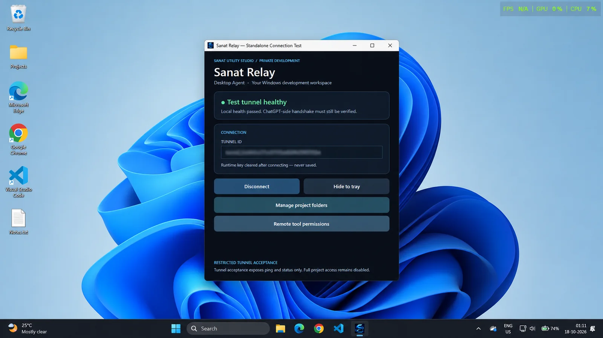
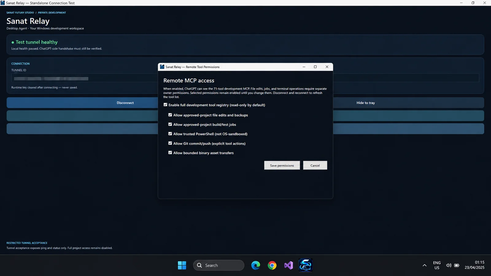
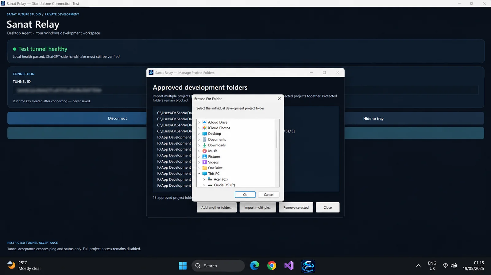

Choose which project directories may be exposed to the development agent.
← All products

Windows · By request
Sanat Relay Desktop Agent
A Windows development companion for working with approved project folders, source files, build jobs and Git operations through AI-assisted workflows.

What it does
Development workflows with deliberate access.
Sanat Relay connects approved development projects to structured actions. Local connectivity, ChatGPT-side access and sensitive operations are separate steps.
Read and search supported files in authorized project workspaces.
Use permissioned edits and backup-aware workflows where enabled.
Run supported development checks and inspect job output under approved permissions.
Inspect changes and explicitly authorize scoped commits or pushes.
Manage access to project operations separately from basic connection status.
Inside the product
See Sanat Relay in action.
Three interface views from the Windows standalone development build. Identifiers are redacted and the screenshots have been edited for presentation.


Availability
Available by request.
Sanat Relay is under active private development. Contact the studio for its current access requirements, development status and licensing information.
Sanat Relay is an independent Sanat Utility Studio project, not an official OpenAI product. A healthy local tunnel test does not by itself confirm ChatGPT integration.